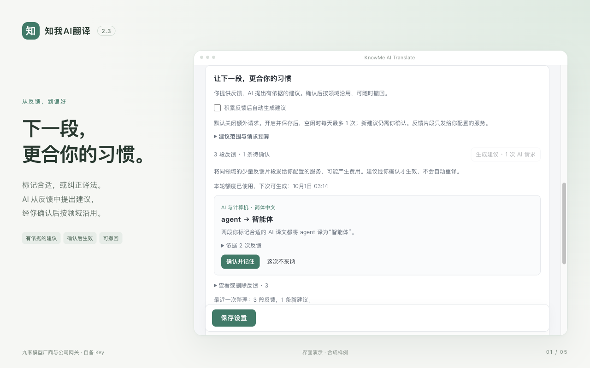
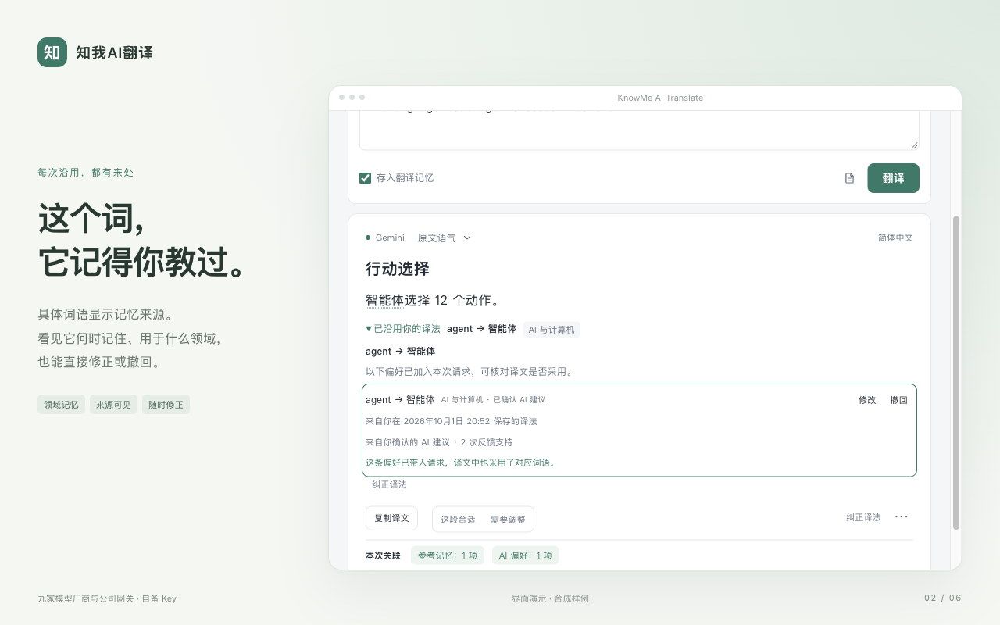
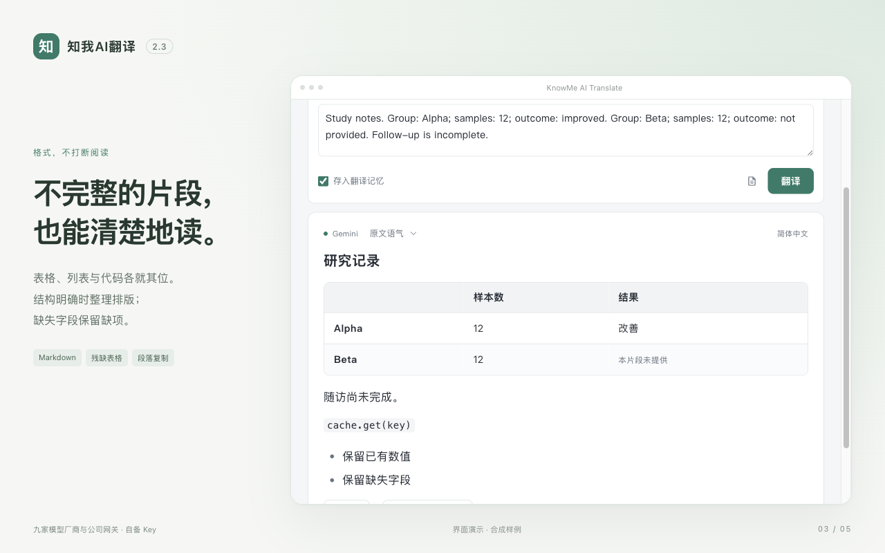
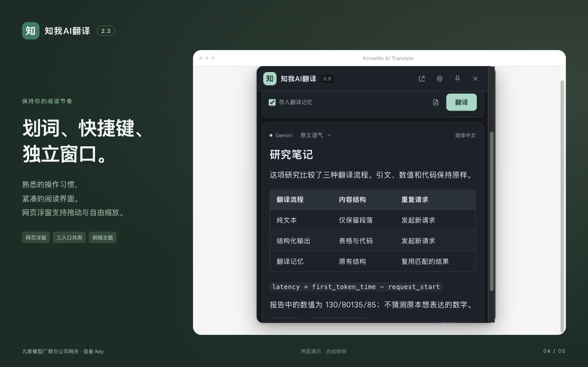
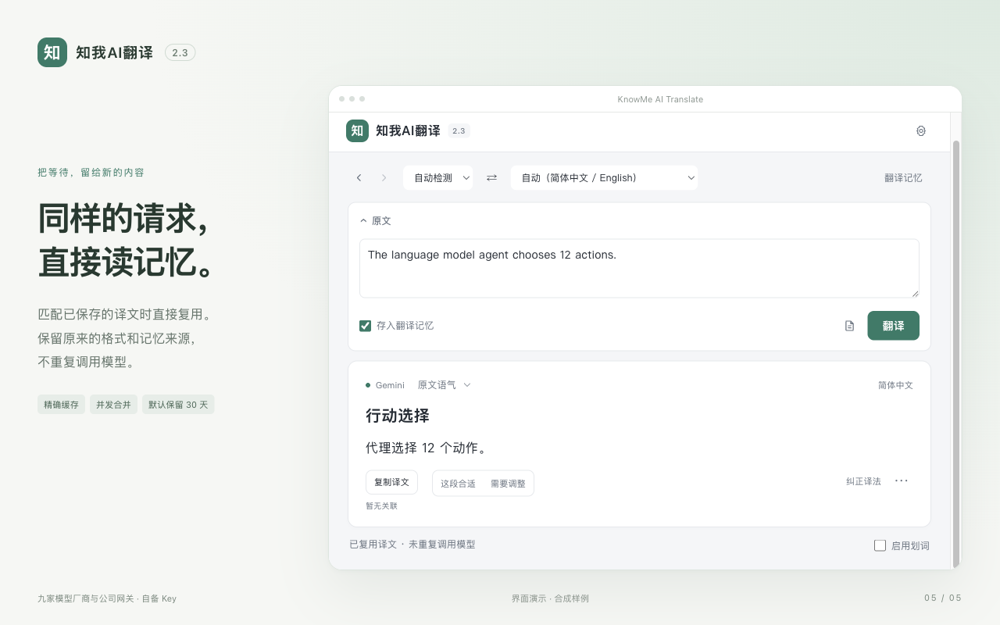
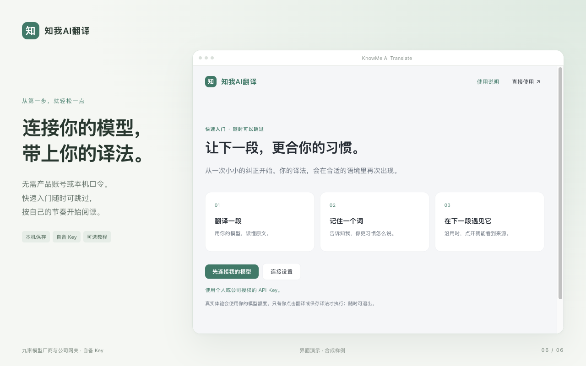

记住什么，由你确认
复制不是认可。只有明确反馈、修正与确认形成偏好。建议显示依据，未经确认不改变翻译。
从工作文档到科研笔记。把明确的反馈变成可确认的偏好，让翻译逐渐贴近你的领域与表达习惯。
九家模型厂商与公司网关 · 自备 Key · 中文默认
流程示意。实际建议需有效反馈，确认前不会改变译法。






复制不是认可。只有明确反馈、修正与确认形成偏好。建议显示依据，未经确认不改变翻译。
普通翻译只附带少量相关偏好，不发送完整历史。AI 归纳是独立、有限额的可选请求；翻译优先。
个人译法可以修正、暂停或删除；反馈和缓存独立清理，个人译法可备份迁移。Key 与记忆在本机浏览器普通保存，不同步到 Google 账号；翻译发送到你选择的服务。
已有本地版本：在 Chrome 扩展管理页重新加载知我，再刷新阅读网页。首次选择厂商、填写 Key，保存并测试后即可使用。可选快速入门带你体验：翻译一段、保存一个词、在新段落查看沿用来源。反馈先选择、再确认；原文框可随时编辑。AI 自动建议默认关闭，可在设置中选择开启。
支持 OpenAI、Google、Anthropic、Moonshot、Zhipu、ByteDance、DeepSeek、Alibaba Cloud、xAI 与公司兼容网关。模型可用性取决于你的账号；暂不包含 OCR、整份 PDF 上传、云端同步或付费套餐。扩展目前不收费，模型服务可能另行收费。
个人适应改进的是有限翻译偏好，不训练模型权重或修改应用代码。领域匹配和局部核对有边界，不保证翻译永远正确。展示图来自当前界面，使用标明的合成样例；不作为模型质量或速度的实测结果。